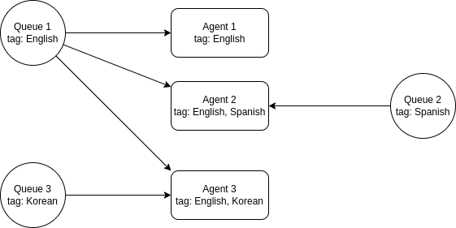
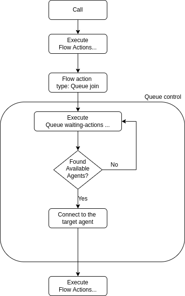

Overview¶
Note
AI Context
Complexity: High – Queues require coordinating agents, tags, flows, and calls. Set up agents and tags first.
Cost: No direct charge for queue operations. Underlying calls are chargeable per call minute.
Async: Yes.
POST /queuescreates the queue synchronously, but calls entering a queue via thequeue_joinflow action are processed asynchronously. PollGET /queues/{id}to monitor queue state, or useGET /queuecallsto track individual call progress.
Call queueing allows calls to be placed on hold without handling the actual inquiries or transferring callers to the desired party. While in the call queue, the caller is played pre-recorded music or messages. Call queues are often used in call centers when there are not enough staff to handle a large number of calls. Call center operators generally receive information about the number of callers in the call queue and the duration of the waiting time. This allows them to respond flexibly to peak demand by deploying extra call center staff.
With the VoIPBIN’s queueing feature, businesses and call centers can effectively manage inbound calls, provide a smooth waiting experience for callers, and ensure that calls are efficiently distributed to available agents, improving overall customer service and call center performance.
The purpose of call queueing¶
Call queueing is intended to prevent callers from being turned away in the case of insufficient staff capacity. The purpose of the pre-recorded music or messages is to shorten the subjective waiting time. At the same time, call queues can be used for advertising products or services. As soon as the call can be dealt with, the caller is automatically transferred from the call queue to the member of staff responsible. If customer or contract data has to be requested in several stages, multiple downstream call queues can be used.
How Queue Routing Works¶
When a call joins a queue, a coordinated process begins to match the caller with an available agent.
The Queue Journey
+-------------------------------------------------------------------------+
| Call's Journey Through Queue |
+-------------------------------------------------------------------------+
1. Call Joins Queue 2. Wait Flow Plays 3. Agent Search
+-----------------+ +-----------------+ +-----------------+
| | | # Hold music | | Check for |
| queue_join |-------->| "Please wait" |------->| available |
| action | | announcements | | agents |
+-----------------+ +-----------------+ +--------+--------+
^ |
| +-----+-----+
| | |
| No agents Agent found!
| | |
+--------------------+ |
Retry every 1 second |
v
+-----------------+
| 4. Connect |
| agent to call |
+--------+--------+
|
v
+-----------------+
| 5. Caller and |
| agent talking |
+-----------------+
What Happens Step by Step
Call Joins Queue: When your flow executes a
queue_joinaction, a queuecall is createdConference Bridge Created: A private conference room is set up for this call
Wait Flow Starts: The caller hears music and announcements from your configured wait flow
Agent Search Begins: The system immediately starts looking for available agents
Continuous Checking: Every second, the system checks if any matching agents are now available
Agent Found: When an agent matches, they’re invited to join the conference
Service Begins: Both parties are connected and can talk
Queuecall Lifecycle¶
Every call in a queue moves through a series of states:
+--------------------------------------------------------------------------+
| Queuecall State Machine |
+--------------------------------------------------------------------------+
+------------+
| initiating |
| (brief) |
+-----+------+
|
v
+------------------+
wait_timeout--->| waiting |<---+
exceeded | (in wait flow) | |
| +--------+---------+ |
| | agent found | kick requested
| v |
| +------------------+ |
| | connecting |----+
| | (dialing agent) |
| +--------+---------+
| | agent joins
| v
| +------------------+ service_timeout
| | service |<---------- exceeded
| | (agent on call) | |
| +--------+---------+ |
| | |
| +----------+ +--------+--------+ |
| | kicking | v v v
+--->| | +------------+ +-------------+
+--->| (kicked) | | abandoned | | done |
+----------+ | (failed) | | (success) |
+------------+ +-------------+
State Descriptions
State |
What’s happening |
|---|---|
initiating |
Call just entered the queue. Conference bridge being set up. |
waiting |
Caller is hearing wait flow. System is searching for agents. |
connecting |
Agent found and being called. Caller still in wait flow. |
kicking |
Call is being removed (kicked) from the queue. |
service |
Agent and caller are connected. Conversation in progress. |
done |
Call completed successfully. Agent finished helping caller. |
abandoned |
Call ended before completion - caller hung up, timeout, etc. |
Agent Searching¶
While the call is in the queue, the queue continuously searches for available agents to handle the call. Each queue has tags associated with it that determine which agents can receive calls from that queue.
How Agent Matching Works
+--------------------------------------------------------------------------+
| Agent Matching Process |
+--------------------------------------------------------------------------+
Queue Configuration: Agent Pool:
+------------------------+ +--------------------------------+
| Tag IDs: | | Agent A |
| * "english" | | Tags: english, billing, vip |
| * "billing" | | Status: available |
| | | -------------------------- |
+------------------------+ | Agent B |
| | Tags: english |
| | Status: available |
| | -------------------------- |
v | Agent C |
+------------------------+ | Tags: english, billing |
| Search for agents with | | Status: busy |
| ALL of these tags: | | -------------------------- |
| * english [x] | | Agent D |
| * billing [x] | | Tags: spanish, billing |
+------------------------+ | Status: available |
| +--------------------------------+
|
v
+--------------------------------------------------------------------------+
| Results: |
| [x] Agent A - Has english + billing + vip, is available |
| [ ] Agent B - Missing "billing" tag |
| [ ] Agent C - Has tags but is busy |
| [ ] Agent D - Missing "english" tag |
| |
| -> Agent A is selected! |
+--------------------------------------------------------------------------+

Tag Requirements
Tags work as a skill-based filter:
Agents must have ALL tags the queue requires (AND logic)
Having extra tags is fine (Agent A has “vip” but queue doesn’t require it)
If an agent is missing even one required tag, they’re excluded
Tags define skills, languages, departments, or any grouping you need
Note
AI Implementation Hint
Before creating a queue, you must have tags and agents already set up. Create tags via POST /tags, assign them to agents via PUT /agents/{id}, then reference the tag IDs in the queue’s tag_ids field. Agents must have all tags the queue requires (AND logic), so verify agent tags with GET /agents/{id} before expecting queue routing to work.
Agent Status
The agent’s status must be “available” to receive queue calls:
Agent Statuses and Queue Eligibility:
.. list-table::
* - Status
- Can receive queue calls?
* - available busy wrap-up away offline
- [x] Yes - Agent is ready to take calls [ ] No - Agent is handling another call [ ] No - Agent is finishing previous cal [ ] No - Agent is temporarily away [ ] No - Agent is not logged in
Selection Method
When multiple agents match, the system uses random selection:
Multiple agents available:
+------------+ +------------+ +------------+
| Agent A | | Agent C | | Agent E |
| (matches) | | (matches) | | (matches) |
+------------+ +------------+ +------------+
| | |
+---------------+---------------+
|
v
Random Selection
|
v
One agent picked
Agent Status Transitions¶
Agents move through a lifecycle as they handle queue calls.
Status Transition Diagram
+----------+ +----------+
| offline |-------- login -------->| available|
+----------+ +-----+----+
^ |
| receive call
| |
| v
| +----------+
+--------- logout -------------| busy |
| +-----+----+
| |
| call ends
| |
| v
| +----------+
+--------- logout -------------| wrap-up |
+-----+----+
|
wrap-up done
|
v
+----------+
| available|
+----------+
Status Behaviors
Transition |
What happens |
|---|---|
login |
Agent becomes available to receive queue calls |
receive call |
Queue connects agent to caller; status becomes busy |
call ends |
Conversation finished; agent enters wrap-up for post-call work |
wrap-up done |
Agent returns to available; ready for next call |
logout |
Agent goes offline; removed from queue matching |
Multi-Queue Agent Scenarios¶
Agents can belong to multiple queues simultaneously based on their tags.
Single Agent, Multiple Queues
Agent A's Tags: [english, billing, tech_support]
+------------------------+ +------------------------+
| Queue: English Billing | | Queue: Tech Support |
| Required: english, | | Required: tech_support |
| billing | | |
+------------------------+ +------------------------+
| |
+--------- Agent A ------------+
| (matches both) |
v v
Agent A can receive calls from EITHER queue
Priority Handling
When an agent matches multiple queues, the system picks the longest-waiting caller across all matching queues:
Queue A: 3 callers waiting (oldest: 2 min)
Queue B: 1 caller waiting (oldest: 5 min) <-- This caller gets Agent A
Queue C: 5 callers waiting (oldest: 30 sec)
Tag Strategy for Multi-Queue
+-------------------------------------------------------------------------+
| Multi-Queue Tag Strategy |
+-------------------------------------------------------------------------+
Tier 1 Agent (handles simple issues):
Tags: [english, tier1, billing_basic, tech_basic]
|
+---> Matches: Basic Billing Queue, Basic Tech Queue
Tier 2 Agent (handles complex issues):
Tags: [english, tier2, billing_advanced, tech_advanced]
|
+---> Matches: Advanced Billing Queue, Advanced Tech Queue
Supervisor (handles escalations):
Tags: [english, supervisor, billing_basic, billing_advanced,
tech_basic, tech_advanced]
|
+---> Matches: ALL queues (can help anywhere)
Flow Execution¶
A call placed in the queue will progress through the queue’s waiting actions, continuing through pre-defined steps until an available agent is located. These waiting actions may involve playing pre-recorded music, messages, or custom actions, enhancing the caller’s experience while awaiting assistance in the queue.
Wait Flow Structure
+--------------------------------------------------------------------------+
| Wait Flow Execution |
+--------------------------------------------------------------------------+
Caller enters queue
|
v
+-----------------------------------------------------------------------+
| Wait Flow Loop |
| |
| +----------+ +----------+ +----------+ +----------+ |
| | "Please |---->| # Hold |---->| "Your |---->| # Hold | |
| | hold" | | music | | position | | music | |
| | (talk) | | (play) | | is 3" | | (play) | |
| +----------+ +----------+ +----------+ +----------+ |
| ^ | |
| | | |
| +----------------------------------------------------+ |
| (loops until agent found) |
+-----------------------------------------------------------------------+
|
| Agent found!
v
+----------------+
| Wait flow ends |
| Service begins |
+----------------+

Wait Flow Features
Looping: The wait flow automatically repeats until the call is answered or times out
Custom Actions: You can use any flow action that makes sense while waiting
Announcements: Play position updates, estimated wait time, or promotional messages
Music: Play hold music to make the wait feel shorter
Timeout Handling¶
Queues have two distinct timeout mechanisms to prevent calls from being stuck indefinitely:
Wait Timeout
Controls how long a caller can wait before being removed from the queue:
+--------------------------------------------------------------------------+
| Wait Timeout |
+--------------------------------------------------------------------------+
Call joins queue Wait timeout reached
| |
v v
-----o-----------------------------------------------------o------------->
|<--------------- wait_timeout (ms) ----------------->| Time
| |
| Caller hears wait flow | Call is kicked
| System searches for agents | Status: abandoned
| |
Set via queue’s
wait_timeoutfield (milliseconds)0 means no timeout (wait forever)
When exceeded, the call is removed with status “abandoned”
Service Timeout
Controls how long a conversation can last once connected:
+--------------------------------------------------------------------------+
| Service Timeout |
+--------------------------------------------------------------------------+
Agent connects Service timeout reached
| |
v v
-----o-----------------------------------------------------o------------->
|<------------- service_timeout (ms) ---------------->| Time
| |
| Agent and caller talking | Call is ended
| (status: service) | Status: done
| |
Set via queue’s
service_timeoutfield (milliseconds)0 means no timeout (talk forever)
When exceeded, the call is ended gracefully
Note
AI Implementation Hint
Timeout values are in milliseconds, not seconds. A 5-minute wait timeout is 300000, not 300. Setting 0 disables the timeout entirely (wait/talk forever). If callers are being disconnected unexpectedly, check that timeout values are not set in seconds by mistake.
Timeout Scenarios
Scenario 1: Caller waits too long
+----------+ +-----------+
| waiting |----- wait_timeout exceeded ----------->| abandoned |
+----------+ +-----------+
Scenario 2: Caller hangs up while waiting
+----------+ +-----------+
| waiting |----- caller hangup ------------------->| abandoned |
+----------+ +-----------+
Scenario 3: Successful call, normal end
+----------+ +-----------+ +---------+ +------+
| waiting |-->| connecting|-->| service |--hangup>| done |
+----------+ +-----------+ +---------+ +------+
Queue Metrics and Tracking¶
Queues track detailed metrics for reporting and analysis:
Per-Queue Statistics
+--------------------------------------------------------------------------+
| Queue Statistics |
+--------------------------------------------------------------------------+
Queue: "Customer Support"
.. list-table::
* - total_incoming_count
- 1,234 calls entered this queue
* - total_serviced_count
- 1,100 calls reached an agent
* - total_abandoned_count
- 134 calls abandoned (11% abandon r
Per-Queuecall Metrics
Each call in the queue tracks:
Queuecall: "abc-123-def"
.. list-table::
* - duration_waiting
- 45,000 ms (45 seconds in wait flow
* - duration_service
- 180,000 ms (3 minutes with agent)
* - tm_create
- 2024-01-15 10:30:00 (entered queue
* - tm_service
- 2024-01-15 10:30:45 (agent connect
* - tm_end
- 2024-01-15 10:33:45 (call ended)
Calculating Service Levels
You can calculate key performance indicators from these metrics:
Service Level = (total_serviced_count / total_incoming_count) × 100
= (1100 / 1234) × 100 = 89.1%
Abandonment Rate = (total_abandoned_count / total_incoming_count) × 100
= (134 / 1234) × 100 = 10.9%
Average Wait Time = Sum of all duration_waiting / total_incoming_count
When No Agents Are Available¶
If no agents match or all matching agents are busy, the caller waits:
+--------------------------------------------------------------------------+
| No Agents Available Scenario |
+--------------------------------------------------------------------------+
10:00:00 - Call joins queue, no agents available
|
v
+-------------------------------------------------------------------------+
| System checks for agents every 1 second: |
| |
| 10:00:01 - Check agents... none available |
| 10:00:02 - Check agents... none available |
| 10:00:03 - Check agents... none available |
| 10:00:04 - Check agents... Agent A just became available! |
| |
| Caller hears wait flow the entire time |
+-------------------------------------------------------------------------+
|
v
10:00:04 - Agent A is connected
Retry Behavior
System retries every 1 second
Caller continuously hears the wait flow
As soon as any agent becomes available and matches, they’re connected
This continues until wait_timeout (if configured) or an agent answers
Conference Bridge Architecture¶
Each queuecall gets its own private conference bridge:
+--------------------------------------------------------------------------+
| Conference Bridge Model |
+--------------------------------------------------------------------------+
Queuecall for Caller A Queuecall for Caller B
+-------------------------+ +-------------------------+
| Conference Bridge #1 | | Conference Bridge #2 |
| +---------+ +---------+ | | +---------+ +---------+ |
| | Caller | | Agent | | | | Caller | | Agent | |
| | A | | 1 | | | | B | | 2 | |
| +---------+ +---------+ | | +---------+ +---------+ |
+-------------------------+ +-------------------------+
Why This Design?
Each call is isolated in its own bridge
Caller joins immediately, hears wait flow
Agent joins when available, both can talk
Clean separation - no cross-talk between calls
Common Queue Scenarios¶
Scenario 1: Quick Answer
Caller dials -> Enters queue -> Agent available -> Connected in 2 seconds
|
v
duration_waiting: 2000ms
status: done
Scenario 2: Wait Then Connect
Caller dials -> Enters queue -> No agents -> Waits 45 seconds -> Agent available
| |
v v
# Hold music plays Connected!
Position announcements duration_waiting: 45000ms
Scenario 3: Caller Abandons
Caller dials -> Enters queue -> Waits 2 minutes -> Caller hangs up
| |
v v
# Hold music plays status: abandoned
duration_waiting: 120000ms
Scenario 4: Wait Timeout
Caller dials -> Enters queue -> Waits 5 minutes -> wait_timeout exceeded
| |
v v
# Hold music plays Kicked from queue
status: abandoned
Best Practices¶
1. Configure Appropriate Timeouts
wait_timeout: 300000 (5 minutes - reasonable for customer service)
service_timeout: 0 (no limit for service - let conversations finish)
2. Design Engaging Wait Flows
Mix music with periodic announcements
Provide position in queue updates
Offer callback options for long waits
Keep announcements concise
3. Tag Agents Thoughtfully
Good tag structure:
+-----------------------------------------+
| Language tags: english, spanish, french |
| Skill tags: billing, tech_support, sales|
| Tier tags: tier1, tier2, supervisor |
+-----------------------------------------+
4. Monitor Key Metrics
Track abandonment rates - high rates indicate understaffing or long waits
Monitor average wait times - aim for your service level target
Review service durations - identify training opportunities